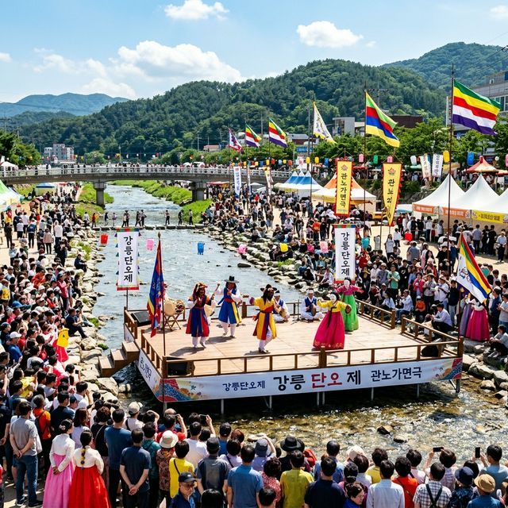
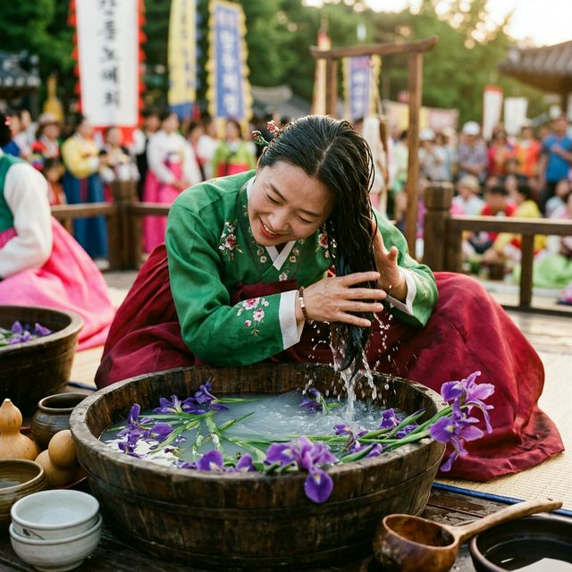
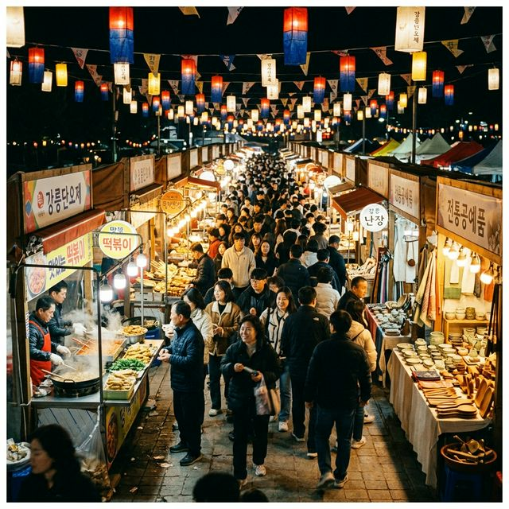

강릉 단오제 2026 일정 및 프로그램 유네스코 무형문화유산 남대천 난장 완벽 가이드
"천 년의 향기, 강릉 남대천을 물들이다!"
대한민국 최대 규모의 민속 축제이자 유네스코 인류무형문화유산인 '강릉 단오제'가 2026년 여름의 시작을 알립니다. "풀리니, 단오다"라는
주제로 열리는 이번 축제는 천 년을 이어온 우리 민족의 신명과 화합의 정신을 그대로 간직하고 있습니다. 신을 모시는 경건한 제례부터 전국 최대 규모를 자랑하는 난장의 활기까지, 강릉 남대천변을 가득
채울 이 특별한 민속 대잔치는 한국 여행의 정수를 보여줄 것입니다.
1. 2026 강릉 단오제 일정 및 장소 정보
2026년 강릉 단오제 본 행사는 6월 15일부터 6월 22일까지 8일간 강릉 남대천 행사장 일대에서 성대하게 펼쳐집니다. 하지만 단오제는 본 행사 이전부터 대관령에서
신을 모시는 신주빚기(5월 21일)와 대관령 산신제 및 국사성황제(5월 31일) 등 사전 행사를 통해 축제의 분위기를 서서히 고조시킵니다.
축제의 핵심 장소인 남대천 행사장에는 수백 개의 천막이 들어서는 난장과 함께 단오제단, 공연장, 체험 존 등이 조성됩니다. 강릉역이나 시내 어디서든 접근성이 좋아 도보나 셔틀버스를 통해 편리하게 이동할
수 있습니다. 8일간 이어지는 이 거대한 제전은 단순한 지역 축제를 넘어 대한민국 민속 문화의 현재를 확인하는 소중한 기회가 될 것입니다.
올해도 역시 전국 각지에서 수많은 인파가 몰릴 것으로 예상되므로, 숙박과 교통편을 미리 확보하는 것이 중요합니다. 특히 영신행차(6월 17일 예정)와 같은 하이라이트 행사 날에는 도로 통제가 진행될 수
있으니 실시간 안내를 참고하세요. 천 년의 시간을 거슬러 올라가 신과 인간이 하나 되는 강릉의 여름 속으로 여러분을 초대합니다.

강릉 남대천을 가득 메운 단오제 행사와 전통 공연의 활기찬 현장 / AI 제작 이미지
2. 영신행차와 길놀이: 중앙시장을 가로지르는 신명 나는 행렬
강릉 단오제의 가장 화려한 볼거리는 단연 영신행차입니다. 대관령 국사성황신을 단오 제단으로 모셔오는 이 행렬은 수천 명의 시민과 공연단이 참여하여 장관을 이룹니다. 행렬은
강릉 중앙시장을 거쳐 남대천 행사장까지 이어지며, 길목마다 늘어선 관중들의 환호와 농악대의 신명 나는 연주가 도시 전체를 축제의 열기로 뒤덮습니다.
특히 중앙시장 구간은 상인들과 관광객들이 어우러져 가장 활기찬 분위기를 연출합니다. 각 읍면동을 대표하는 시민들의 다채로운 퍼포먼스와 전통 복색은 현대적인 도시 풍경과 묘한 조화를 이루며 '강릉다운'
매력을 발산합니다. 행렬 중간중간 건네지는 떡과 술을 나눠 마시며 모두가 이웃이 되는 화합의 장이 펼쳐집니다.
영신행차 관람 명당은 일찍부터 자리가 차기 때문에 미리 도착하여 자리를 잡는 것이 좋습니다. 시장 맛집에서 시원한 막국수 한 그릇을 즐기고 행렬을 기다리는 것도 추천하는 동선입니다. 소리 높여 외치는
'단오다!'라는 함성 속에 녹아들다 보면, 우리 민족의 저변에 흐르는 역동적인 에너지를 몸소 느끼실 수 있을 것입니다.
3. 전국 최대 규모의 '난장': 식도락과 쇼핑의 끝판왕
강릉 단오제의 꽃은 역시 '난장'입니다. 남대천을 따라 끝없이 이어진 천막 아래에는 먹거리, 생필품, 공예품, 사주팔자까지 없는 것이 없습니다. 전국 각지에서 모여든
상인들이 펼치는 난장은 그 규모 면에서 국내 독보적입니다. 난장 특유의 활기와 사람 냄새 나는 정을 느낄 수 있는 이곳은 단오제의 강력한 유입 채널이기도 합니다.
식도락가들에게 난장은 천국입니다. 가마솥에서 끓여내는 국밥, 즉석에서 부쳐주는 파전과 도토리묵, 그리고 단오의 상징인 수리취떡과 제물로 올렸던 신주(神酒) 시음은 빼놓을 수 없는 필수 경험입니다. 야외
포장마차에 앉아 남대천의 시원한 밤바람을 맞으며 즐기는 약주 한 잔은 강릉 단오제 여행의 낭만을 완성해 줍니다.
난장 곳곳에는 서커스, 각설이 타령 등 추억의 거리 공연들도 펼쳐져 어른들에게는 향수를, 아이들에게는 이색적인 재미를 선사합니다. 대형 마트와 쇼핑몰에서는 느낄 수 없는 전통 시장만의 역동성과 인간미를
난장에서 만끽해 보세요. 떠들썩한 난장의 소음과 맛있는 냄새는 여러분의 오감을 즐겁게 해줄 것입니다.

단오의 전통 풍습, 창포물에 머리 감기 체험을 즐기는 방문객 / AI 제작 이미지
4. 유네스코 지정 문화재 공연: 관노가면극과 단오굿
강릉 단오제의 예술적 가치는 지정문화유산 공연에서 나옵니다. 국내 유일의 무언 가면극인 '강릉 관노가면극'은 대사 없이 춤과 동작만으로
양반광대와 소매각시의 사랑 이야기를 유쾌하게 풀어냅니다. 정적인 마임과는 또 다른 해학적인 춤사위는 관객들을 절로 어깨춤을 추게 만듭니다.
행사장의 중심인 단오제단에서 연일 이어지는 '단오굿'은 영적인 울림을 줍니다. 무녀들의 화려한 춤과 가락, 그리고 마을의 안녕과 방문객의 복을 빌어주는 사설은 종교를 넘어 하나의 웅장한 예술 공연으로
다가옵니다. 소원을 적어 매단 오색 천들이 단오 제단 주변에서 바람에 흔들리는 모습은 경건함과 함께 평온함을 선사합니다.
이러한 전통 공연들은 무료로 관람할 수 있어 더욱 매력적입니다. 무대 아래 바닥에 앉아 아티스트들의 숨소리를 가까이서 느끼며 우리 문화의 깊은 내공을 경험해 보세요. 외국인 관광객들에게도 가장 인기
있는 코스로, 한국 전통 예술의 미학을 전 세계에 알리는 중요한 현장이기도 합니다.
5. 단오 체험촌: 창포 머리 감기와 수리취떡 맛보기
직접 참여하는 재미가 가득한 '단오 체험촌'은 가족 여행자들에게 인기 만점입니다. 단오의 가장 대표적인 풍습인 '창포 머리 감기'는 창포
뿌리를 삶은 물에 머리를 감으며 일 년의 무병장수와 액운을 쫓는 의식입니다. 시원한 창포물에 발을 담그거나 손을 씻는 간단한 체험만으로도 단오의 의미를 되새길 수 있습니다.
또한, 쑥 향 가득한 수리취떡을 직접 쳐보고 맛보는 프로그램도 운영됩니다. 수레바퀴 모양의 문양을 찍어내어 먹는 수리취떡은 단오 절식의 대표주자입니다. 이 외에도 단오 부채 그리기, 관노 가면 만들기,
소원 등 달기 등 아이들의 창의력을 자극하는 다양한 민속 체험이 가득합니다.
체험 부스들은 남대천 산책로를 따라 조성되어 있어 여유롭게 둘러보기 좋습니다. 전통 문화를 이론이 아닌 몸으로 익히는 과정은 아이들에게 살아있는 교육이 됩니다. 단오제에서만 할 수 있는 이색적인
체험들을 통해 올여름의 행운을 가득 담아 가시기 바랍니다.
6. 민속놀이 한마당: 씨름, 그네, 그리고 줄다리기
단오제의 역동적인 매력은 민속놀이 경연에서 폭발합니다. 모래판 위에서 펼쳐지는 씨름 대회는 남녀노소 모두가 손에 땀을 쥐게 만드는 하이라이트입니다. 장사들의 거친 숨소리와
기술 한판 승부는 관객들의 환호를 자아냅니다. 그네뛰기장에서는 화려한 한복을 휘날리며 하늘 높이 솟구치는 여인들의 단아한 기상을 확인할 수 있습니다.
시민들이 직접 참여하는 줄다리기와 윷놀이 대회는 마을 간의 자부심을 건 한판 승부가 펼쳐져 응원전 또한 장관입니다. 이기는 팀에게는 상금이나 상품도 주어지지만, 그보다는 다 함께 땀 흘리며 웃고 즐기는
그 과정 자체가 단오제의 진정한 가치입니다.
관광객들도 직접 투호 던지기나 제기차기 등 간단한 민속놀이를 즐길 수 있는 체험 존이 마련됩니다. 춘천의 마임축제가 몸의 표현에 집중한다면, 강릉의 단오놀이는 몸의 부딪힘과 협력을 통한 공동체 의식에
집중합니다. 건강한 에너지가 넘치는 단오 한마당에서 여러분의 활력을 마음껏 발산해 보세요.

불빛과 인파로 가득한 강릉 단오 난장의 정겨운 시장 밤 풍경 / AI 제작 이미지
7. 밤하늘을 수놓는 불꽃놀이와 남대천의 밤
축제 기간 중 몇 차례 진행되는 불꽃쇼는 남대천의 밤을 환상적으로 장식합니다. 시원한 강바람을 맞으며 밤하늘로 솟구치는 불꽃을 바라보는 순간은 단오제 여행의 감동을
극대화합니다. 불꽃이 터질 때마다 남대천 물결에 비치는 오색 빛깔은 수많은 카메라 셔터 소리를 자아냅니다.
불꽃놀이가 끝난 후에도 난장의 열기는 식지 않습니다. 오히려 조명이 밝혀진 난장은 낮보다 더 화려한 자태를 뽐냅니다. 강물 위에 띄워진 소원 등들이 은은하게 흐르는 모습은 불꽃쇼의 강렬함과는 대비되는
차분한 아름다움을 선사합니다. 밤의 단오장은 잊고 있었던 낭만과 향수를 불러일으키는 마법 같은 공간입니다.
남대천 둑길을 따라 길게 이어진 야간 산책로는 연인들에게 인기 있는 데이트 코스입니다. 멀리서 들려오는 풍물패의 소리와 난장의 활기를 배경으로 걷는 이 길은 강릉 단오제에서만 느낄 수 있는 독특한
여행의 정취입니다. 춘천의 도깨비난장만큼이나 강렬한 강릉의 밤을 꼭 경험해 보세요.
8. 강릉 여행 팁: 주차 및 셔틀버스, 숙박 가이드
강릉 단오제를 지혜롭게 즐기기 위한 실무 팁입니다. 축제 기간 남대천 일대는 주차가 불가능에 가깝습니다. 대신 강릉시에서 운영하는 대규모 임시 주차장과 무료 셔틀버스를
적극 활용하세요. 셔틀버스는 주요 거점을 15분 간격으로 연결해 주어 훨씬 쾌적한 이동이 가능합니다.
더불어 강릉 중앙시장 인근의 공영 주차장도 오전 일찍 만차되므로, 기차(KTX)를 이용해 강릉역에 내린 뒤 시내버스를 이용하는 것이 가장 빠른 이동 방법입니다. 행사장은 전 구역이 무료 입장이며,
대부분의 공연도 무료로 진행되므로 주머니 부담 없이 축제를 즐길 수 있습니다. 단, 난장에서의 미식을 위해 현금을 조금 준비하는 센스를 발휘하세요.
숙소는 축제장과 가까운 시내권이 좋지만, 조기 예약이 필수입니다. 만약 시내 숙소를 구하지 못했다면 경포대나 안목 해변 인근의 숙소를 잡고 대중교통으로 이동하는 것도 방법입니다. 6월의 강릉은 일교차가
있을 수 있으니 가벼운 외투를 챙기시고, 많이 걷게 되는 축제 특성상 편안한 신발은 필수 중의 필수입니다.
9. 맺음말: 천 년을 이어온 단오의 신명, 강릉에서 만나보세요
지금까지 2026 강릉 단오제의 풍성한 소식들을 전해드렸습니다. 영주 선비의 품격, 하동 차의 향기, 춘천 마임의 예술성을 지나 강릉 단오의 이 뜨거운 민속 에너지는 우리
삶에 큰 힘이 될 것입니다. 천 년을 버텨온 우리 전통 문화의 생명력을 확인하고, 다 함께 어우러지는 대동(大同)의 세계를 강릉에서 직접 체험하시길 바랍니다.
단오가 풀려야 여름이 시작된다는 말처럼, 강릉 단오제와 함께 여러분의 2026년 여름을 활기차게 열어보세요. 시원한 남대천 물줄기와 신명 나는 국악 가락이 있는 곳, 강릉 단오제에서 여러분을
기다리겠습니다. 지금 바로 강릉행 티켓을 확인해 보세요!
#강릉단오제
#2026축제일정
#유네스코무형문화유산
#남대천난장
#영신행차
#관노가면극
#창포머리감기
#강릉가볼만한곳
#6월축제추천
#중앙시장맛집